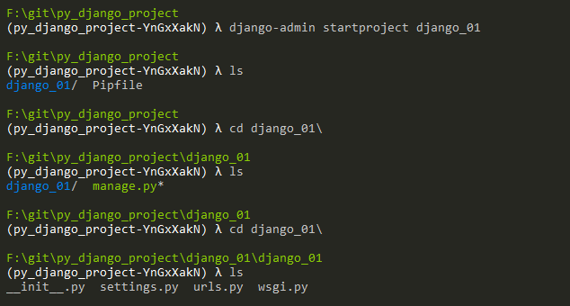
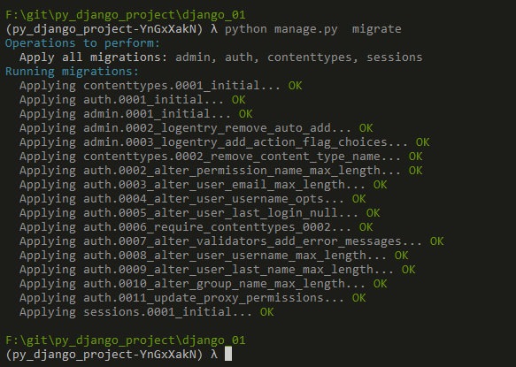
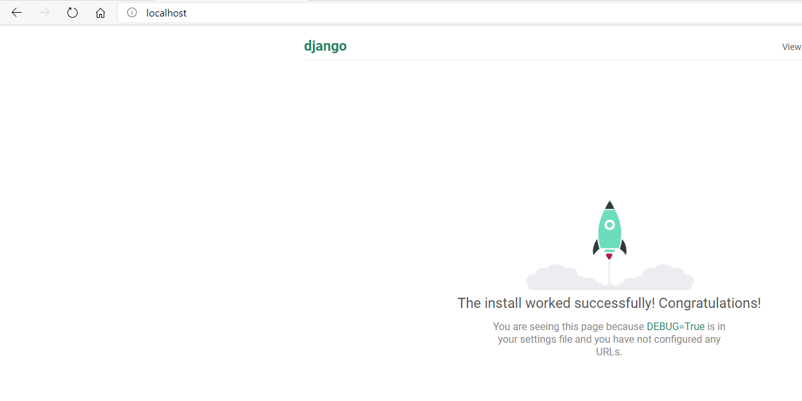
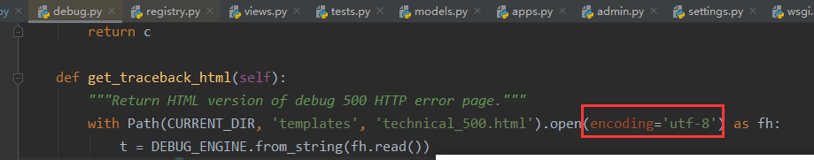
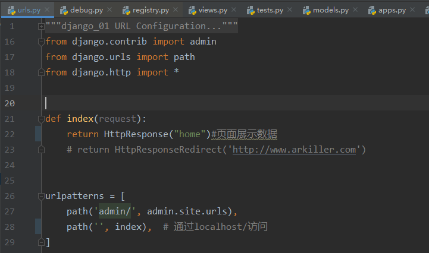

Django
虚拟环境

指定虚拟环境创建的位置
安装Django环境
>pip install pipenv>cd xxx/Django_projext>pipenv shell>pip install Django==2.2创建项目
>django-admin startproject [项目名]
模型迁移到数据库

运行django项目并访问


添加路由
django本身缺陷，修改字符编码为utf-8

硬性要求，固定格式
定义试图时，第一个参数必须是request
返回信息必须是HttpResponseBase 基类的对象或者它子类的对象才可以

Web基础培训 第一课与第二课
企业安全响应中心大全
工具和服务器镜像资源下载
网络安全行业
行为分类
- 白帽子
- 黑客
- 骇客
- 红客
web安全工程师（安服仔）
- 运维基础
- Web安全
渗透测试工程师
中级
- Web安全
- 内网渗透
- 熟悉各种语言Python、java、Goalng等
高级
- Web安全
- 内网渗透
- 熟悉各种语言Python、java、Goalng等
- APT方向
公安方向
中级
- Web安全
- 内网渗透
- 熟悉各种语言Python、java、Goalng等
SRC: 企业安全响应中心
web应用: 访问的网站 即 应用
Web安全：发现Web应用上出现的漏洞
家庭电脑
主要组成：显卡、cpu、内存,倾向于视觉，效果，体验等
系统区别
- Windows 2000
- Windows XP 标配容器：IIS 6.0
- Windows 7 标配容器：IIS 7.0 or 7.5
- Windows 8.1 标配容器：IIS 8.0 or 8.5
- Windows 10 标配容器：IIS 10
服务器
主要组成：cpu、内存 倾向于运行大型软件、大量计算等，系统稳定性高
系统区别
- Windows 2003 标配容器：IIS 6.0
- Windows 2008 标配容器：IIS 7.0 or 7.5
- Windows 2012 标配容器：IIS 8.0
- Windows 2016 标配容器：IIS 8.5
- Windows 2019 标配容器：IIS 10
容器
IIS 常用脚本+数据库
- ASP+Acces数据库
- ASPX(ASP.NET)+MSSQL
Apache 常用脚本+数据库
- PHP+Mysql
Nginx常用脚本+数据库
- PHP+Mysql
Tomcat常用脚本+数据库
- JSP+Mysql or Oracle
数据库：
Access、Sql server(MSSQL)、Mysql、Redis、MongoDB